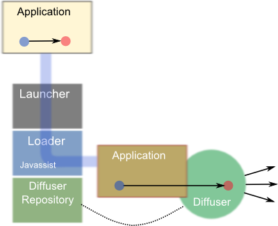
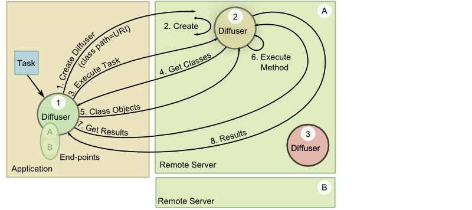

Overview
The goal of Diffusive Programming is to make task-oriented distributed computing easier by separating the execution logic from the distribution logic. Diffusive programming, defined by a set of six principles, is an approach for performing method-level, task-oriented distributed computing. In diffusive programming, any method can be marked for distribution, regardless of its signature. And marking a method is necessary and sufficient for its execution to be distributed. Distribution of tasks occurs through a network of nodes that can accept tasks and execute them, or forward them on. Nodes executing a task, load the required resources as needed, and cache them. The topology of the network of nodes can be anything that can be represented as a directed graph. Topologies can be tailored to solve specific problems. Diffusive is a Java reference implementation of the six principles that define diffusive programming.
Introduction
Task-oriented distributed computing allows independent computational tasks to be distributed to multiple computing nodes, presumably to execute in parallel. This approach can reduce the overall compute time of a set of independent tasks. For example, in quantitative finance, one may desire to calculate risk metrics for each financial instrument contained in a large portfolio. When the calculation of the desired risk metrics for each instrument is independent of the calculation for all other instruments, the risk metrics of each instrument can be calculated independently. In this case, we can speed up the risk metrics calculation for the portfolio by spreading these independent tasks over many compute nodes at once, and then collecting the results.
Typically this type of distribution is performed by a distribution middleware. In many cases, the application makes calls to the middleware's application programming interface (API). The computational task may be represented by an object whose class implements an interface that represents a compute task as defined by the middleware. Including middleware API calls in the application code couples the application to the middleware. And more concerning, the application is now polluted with code used to distribute execution to remote compute nodes. Clearly, with careful design, much of that distribution logic can be hidden behind wrappers that allow the application logic to interact with an abstract compute engine, instead. And, the compute engine could be implemented to execute locally or remotely. But even this approach doesn't overcome the constraints imposed by the requirement that computational tasks implement a specific interface.
Distribution middleware may also require deployment of certain resources (dynamic libraries, class files, etc) to the compute nodes before they can execute remote requests. This requires careful synchronization of versioned resources. And this renders the compute nodes generic, only insofar as the required resources have been deployed to that node.
Diffusive programming is based on a set of six principles intended to facilitate the development of task-oriented distributed applications. it is an approach for performing task-oriented distributed computing that allows the execution of individual methods to be distributed. Any method can be distributed, regardless of its signature. And aside from specifying that a method is to be distributed, no further code changes are required. Furthermore, Diffusive programming allows the application code to define the execution logic (i.e. the order and concurrency of the execution threads) without having to explicitly implement how tasks are distributed---the implementation of the diffusive programming principles manages the distribution of marked methods.
The next section, Principles of Diffusive Programming, provides a concise version of the principles and defines additional terms used throughout the rest of the paper. The subsections that follow the list of principles describe each principle in more detail. With the principles defined and explained, section Diffusion Patterns, puts forth a few network topologies, or patterns, that are possible through diffusive programming. And section Reference Implementation, describes Diffusive, the Java reference implementation of the diffusive programming principles. Finally, section Future Work, presents future work to be done on diffusive.
Principles of Diffusive Programming
Diffusive programming is based on six principles that define a framework for performing task-oriented distributed computing. The six principles are ordered. They build on each other, progressing from the action of distributing the code to the deployment and configuration of the computation nodes.The Principles
- Marking
-
A method can be marked for remote execution. The act of marking, alone, is
sufficient and necessary for a method to be executed on a remote location and have the results returned.
Definition: A diffusive method is a method that has been marked.
- Location Hiding
-
Code calling a diffusive method does not, and can not, know on which
resource that method was executed. This helps keep code cohesive by removing distribution logic
from the application.
Definition: A diffuser is what executes a diffusive method.
Definition: A diffused method is a diffusive method that was executed by a diffuser.
- Best-Efforts Failure Resolution
-
A diffuser will attempt to recover from a
diffusive failure. If the diffuser is unable to recover, it will transfer error
handling to a specified handler or report the error as a local error.
Definition: A diffusive failure is a the failure of a remote diffuser to execute a diffusive method, or the loss of connectivity to a remote diffuser.
- Generic Computation
- Any diffusive method can be executed by any diffuser. A diffuser need not be configured with resources prior to the request to execute a method.
- Indistinguishability
- A diffuser is responsible for executing any diffusive method, and it is also responsible for diffusing methods to other diffusers. This implies that a diffuser must be able to act both as a client and and as a server.
- Open Topology
-
Diffusers can be connected in any topology that can represented as a directed graph. Each node
in the directed graph represents a diffuser. Each directed edge represents a connection from one
diffuser to another. The direction of the edge represents the direction of the diffusion.
And, each diffuser may contains connections to a set of other diffusers.
Definition: A diffuser network is a set of connected diffusers.
Definition: Suppose we have two diffusers, A and B. We say that B is an end-point of A, if A diffuses methods to B.
Marking
Diffusive programming allows the execution of individual methods to be distributed. Marking a method is the act of specifying that a specific method is to be distributed. How a method is marked is up to the implementation of this principle. However, this principle does state that the act of marking a method is necessary and sufficient for the method to be distributed. This means that any method can be marked, and, therefore, executed, regardless of its name, parameters, or return type. This is a departure from many typical task-orient approaches that require the implementation of task interfaces, where the method to be executed has a defined signature (and return type).
The way a method is marked, to become a diffusive method, depends on the implementation of this principle. For example, the reference implementation written in Java currently uses annotations to mark methods. However, it could just as easily allow the fully qualified method names to be specified in a configuration file instead.
The act of marking a method decouples the distribution logic from the application logic. And this leads us to the next principle: location hiding.
Location Hiding
Marking a method tells the diffusive framework that that method is to be executed in a distributed manner. But it is the principle of location hiding that places the requirement that any code calling a diffusive method does not know, or need to know, where that method is executed. Removing the responsibility of knowing or having to deal with the consequences of where the method is executed relieves the calling code of any responsibility regarding distribution. And this allows the application code to remain cohesive. It also means that the same code can be called in a distributed manner, or to run completely locally with any change to the application logic.
In typical distributed systems, the distribution logic must be called directly from the application code. This may occur by calling low level application programming interfaces (API) such as in MPI, or writing task classes that implement interfaces defined by the distribution framework, and then modifying application code to deliver these tasks to the middleware.
Location hiding allows code to be endowed with its execution logic, and that execution logic is then automatically mirrored, but in a distributed manner, simply by marking the method(s). When this is coupled with the next principle, generic computation, we have a powerful and simple mechanism to distribute computation.
Best-Efforts Failure Resolution
A task that is called and executed completely within a local address space (for example, code running entirely in one process). may fail to return a result. The failure may occur because an input or logic error, and in this case, it may be possible to trap and handle the error condition. In other cases, the failure may occur because of an unanticipated bug\footnote{As opposed to the anticipated bug.} or because the server crashed. Under these conditions it may not be possible to trap and handle the error condition, and the entire application may crash or become unresponsive. In both scenarios, however, the fact that there was a failure is known because it due to either the code trapping the error, or the user because the application crashed.
The situation may be quite different when a task is called from one address space and executed in another. For example, suppose the application-attached diffuser diffuses a method to a remote diffuser. Now suppose further that the task fails to execute because of an input or logic error. If the remote diffuser traps the error, it could return an error condition which is return, and again trapped by the application-attached diffuser, and handled as in the non-distributed case. However, suppose instead that the input or logic error isn't trapped, or if there is a bug that causes the task to crash, or if the server crashes, or if the network connection goes down. In this case, the application-attached diffuser waits for the result, but doesn't receive one. Yet, the application-attached diffuser doesn't know if the task is still executing, or if there was a failure.
The best efforts failure resolution principle requires that the application doesn't see a difference between a purely local and a distributed failure. The diffuser making the request is expected to perform its best to recover from a diffusive failure, and if it can't, then it reports the error. For example, diffusers could provide a status service that responds if the diffuser is running and accessible. If the requesting diffuser finds that the status of the remote server is down, then it diffuses the method to a different diffuser. It may attempt to send the task to a different diffuser a configured-number of times before giving up and reporting an error.
Generic Computation
The principle of generic computation provides that any method can be executed on a diffuser without out the need to deploy the resource needed to execute that diffused method. Simply put, the shared object libraries or classes don't need to be deployed to the remote server prior to making the request. Each diffuser must contain a mechanism for providing resources to remote locations and for loading resources from a remote location.
In typical distributed computing, required resources must be deployed to the remote servers prior to requesting remote execution of a specific task. Diffusive programming removes this restriction by requiring that the mechanism which distributes the method execution also provides a capability to deliver the required resources to execute the method.
Note that, however, this does not prevent users from deploying resources to a common location from which they can be obtained at run-time. Under certain deployment scenarios, it may be desirable to have such a common location to provide a centralized control over the versions. But even in this case, the resources need only be deployed to the one common area.
Indistinguishability
The principle of indistinguishability means that a diffuser must be able to receive requests to execute, and at the same time be able to diffuse (forward) those requests to another diffuser. In other words, there isn't such a thing as a client diffuser and a server diffuser: they are one and the same.
The generic computation principle alluded to this principle of indistinguishability. The generic computation principle states that a diffuser must be able to load resources from a remote diffusers, and at the same time must be able to provide resources to a remote diffuser.
Open Topology
The open topology principle, coupled with the indistinguishability principle, requires that it is possible to create networks of diffusers, called diffuser networks, in any topology that can be represented as a directed graph. Each node in the directed graph represents a diffuser, and each (directed) edge connects that diffuser to an end-point, which is another diffuser. Any network that can be represented by a directed graph can be constructed.
This principle allows the construction of networks tailored to solve specific or general problems, networks that can naturally learn/discover an optimal configuration for performing certain types of tasks, or networks that contain sufficient redundancy to provide execution within required timelines. The diffusion patterns section, describes a few possible network topologies (patterns) that are designed to solve specific problems.
Diffusion Patterns
Diffusion patterns are made possible by the last three diffusive programming principles: generic computing; indistinguishability, and open topology. Together, these three principles make the statement that diffusers form building blocks that can be connected as directed graphs. The principle of open topology requires that a diffuser be connected to zero or more end-points to which it can diffuse execution of a method. The principle of indistinguishability states that each end-point, itself, must be a diffuser. This means that that diffuser itself is connected to zero or more other end-points. And, therefore, it can receive tasks as well as diffuse them. Finally, the principle of generic computing requires that a diffuser be able to receive (and send) resources needed to execute a task, allowing tasks to be diffused to other nodes dynamically and executed.
Because any diffuser network that can be represented as a directed graph is possible to construct, there are an infinite number of patters in which these networks can be constructed. And furthermore, their dynamic nature also allows the networks to evolve over time. In the next subsections I describe three illustrative patterns that solve specific problems.
Finally, it is important to emphasize that it is the marking principle and the location hiding principle that require the diffusive framework to provide a mechism for intercepting marked method calls and handing them to the (local) diffuser assigned to the application. It is that (local) diffuser that then takes care of diffusing the execution of the marked method to other remote diffusers for execution. Therefore, all the topologies have this characteristic in common.
Layered
The layered topology is the simplest, and most similar to many distributed middleware solutions. In this topology, the diffuser collocated with the application, which we will call the application-attached diffuser, is connected to a set of end-points, which we call the remote diffusers. The application-attached diffuser, depending on the specifics of its configuration, is responsible for distributing the tasks to the the remote diffusers. The remote diffusers execute the task and return the results to the application-attached diffuser, which returns the results to the application\footnote{In the discussion about the reference implementation, Diffusive, I'll provide details on how these steps can be implemented.}.
Single Layered
The figure below shows the simplest topology---a single layered diffuser network. In this figure, the circles label with D are diffusers, the square at the bottom label with A is the application containing the methods to be diffused. In this topology, the application-attached diffuser is responsible for distributing the tasks to the remote diffusers. The remote diffusers execute their assigned task and return the result to the application-attached diffuser, which then returns it to the application.

Although not covered in the diffusive principles, because it is an implementation detail, it is worth noting at this point that any implementation must address the strategy used to distribute the tasks amongst the diffusers---local and remote. The reference implementation Diffusive provides a Strategy interface that can be implemented to provide a specific strategy based on CPU load, number of executing threads, weighting, or some other scheme. Clearly, the implementation of such a strategy will effect the performance characteristics of the diffusive network.
Multi-Layered
A natural extension of the single-layered diffuser pattern is a multi-layered diffuser pattern. One such pattern is shown in the figure below, which is effectively map-reduce. Implementations of the diffusive principles that allow nested method marking allow tasks to be diffused that, themselves, contain sub-tasks that are to be diffused. This type of topology can dramatically improve the performance of calculations that can be represented as tasks of sub-tasks. An illustrative example is a calculation that is composed of a set of independent calculations, where each of these independent calculations are themselves composed of a set of independent calculations.

As more concrete example, suppose that we want to calculate the expected losses due to borrower default for a large mortgage portfolio using a Monte Carlo simulation. The calculation of expected loss for each mortgage is independent, and therefore the expected loss for each mortgage can be easily distributed. Additionally, for each mortgage we want to calculate the loss over a large number of scenarios from which we calculate the expected loss. (Assume that the scenarios are generated according to some distribution, and so the expectation value is the weighted-average of the loss along each scenario in the distribution.) The loss for each scenario can be calculated independently, and se we can distribute the scenario calculations as well.
We can think of this as nested distribution. The loss calculation for each mortgage can be thought of as a task. And each task is distributed to a remote location for execution. Each task, however, is composed of subtasks--the calculation of loss for each scenario--and these subtasks are further distributed to remote locations for execution. This approach is illustrated in the multi-layered topology figure.
In diffusive programming, we would mark the methods representing the tasks, and we would also mark the methods representing the subtasks. Because the tasks are marked, they are diffused to a remote diffuser. When the remote diffuser executes the task, it comes across the marked subtasks, and therefore diffuses the subtasks further.
Redundant
In distributed computing it is not uncommon that a task fails to complete. A compute node may have crashed or lost network connectivity with the collective. Or some mysterious set of events placed the execution of the task in an unusual, never-to-be-repeated-until-a-demo state that prevented its completion. In cases where the completion of each individual task is required to occur at least once in a given time period, we could send redundant tasks to different compute nodes, and use the first result from each individual task to come back.
The principles of generic computation and location hiding mean the the implementation of the diffusive principles hides this from the application. The application configuration would be the only change to the application's execution. Furthermore, it turns out that this redundancy is quite straight forward to implement through the user of the Strategy interface. By having the Strategy return a set of endpoints, rather than a single one, the same tasks can be sent to all the end-points in a set. The first result to return is passed to the application, and the rest are either ignored, or cancelled.
Learning
Not all servers are created equal. For purposes of distributed computing, I focus on three important differences:
- Execution capacity
- File input-output (I/O) capacity
- Network I/O capacity
Execution capacity describes the available processing capacity of the server. (I am referring to a physical server in these examples. However, the arguments apply equally as well if the servers are virtualized, but roughly guarantee a certain execution capacity.) All else equal, servers with a higher processor and core count will provide higher execution capacity. Clearly there are many other factors that determine the execution capacity of a server. And, therefore, when distributing execution tasks, having information about the execution capacity of a server helps determine the optimal amount of work to distribute to that server relative to other servers.
As an oversimplified example, suppose that you have two servers available to which tasks can be sent: server A and server B. If the server A has four processors and server B has only one processor, then if the servers are otherwise the same, you would expect that server A can process about four times as much work as server B. If the tasks involve writing a large amount of data to a distributed data base, then it may be necessary to consider differences in the servers' file I/O or network I/O capacity when determining the optimal distribution of tasks.
To account for the differences in the capacity of a server to perform tasks, one can use a Strategy that takes in to account weighting factors assigned to each server. These weighting factors would be configured to represent the capacity of the node to perform specific sets of tasks. And the Strategy would select servers for tasks based on their weighting. For example, if server A had four processors and server B has only one processor, we may configure server A's weight to be four, and server B's weight to be 1. The Strategy would use these weights to send about for times as many tasks, on average, to server A than to the server B.
The assignment of these relative weights to each server can be automated in cases where the same type of processing is performed repeatedly. This type of automation can be achieved through the use of a Strategy that adjusts the weights and the logs them. Once the overall execution of the process is complete, the application-attached diffuser makes an associate of the overall execution time (possibly scaled to the number of similar tasks) with those weights. The next time the process is run, Strategy uses this information---weight-to-server assignments and the execution time of that combination---to again adjust the weighting factors according to some optimization algorithm.
Reference Implementation
The Diffusive reference implementation is a Java-based framework that implements the diffusive principles. Aspects of Diffusive are specific to its implementation, and could be implemented in other ways. For example, in Diffusive methods are marked through the use of annotations. In particular, a diffusive method is annotated with \textsf{@Diffusive}. However, it would have been possible to allow methods to be marked through a configuration file that holds a list of markers represented by their fully qualified method names. (For example, the fully qualified method name could be represented by the fully qualified class name with the method name appended with a ".", such as org.myapp.calc.PriceCalc.calculate.). These aspects only change the specifics of how a diffusive framework implements the principles, but not how it behaves.
In the next sections I discuss how Diffusive framework implements the five diffusive principles.
Marking and Diffusing
The diffusive principle, marking, requires that a method is somehow identified as a diffusive method. It further requires that marking a method is both sufficient and necessary for a method to be diffused. The location hiding principle takes it a step further by requiring that any application method calling a diffusive (marked) method does not, and can not, know where that method is being executed.
Launching and Instrumenting
Diffusive accomplishes this through a combination of annotations and load-time byte-code engineering. The annotations are simple: any method that is to be diffused is annotated with @Diffusive. This signals the class-loader that any calls to this method should be replaced with a call to a pre-configured diffuser. In this way, the marked method calls get handed to the diffuser, along with the methods parameter types and values, then name of the class in which the method resides, and the method's return type. To accomplish this Diffusive uses the byte-code engineering framework Javassist. (Some have pointed out that another approach would have been to use aspect-oriented programming frameworks such as AspectJ. However, the compact Javassist framework provides everything Diffusive needs.)
In order to replace marked methods during class-loading, the application classes must be loaded through the diffusive class loader (DiffusiveLoader). This is accomplished by using an application launcher, called the diffusive launcher (DiffusiveLauncher). The diffusive launcher accepts the name of the application's Java class, creates a diffusive class loader, and asks it to run the application. The diffusive loader reads the configuration items, sets up the application-attached diffuser to which marked method calls are diverted, and determines whether a class is loaded by the application's class loader and which are passed to the Javassist Loader.

The above figure illustrates launching an application in Diffusive. At the top of the figure is a box labeled "Application" which represents the unadulterated application. The light blue dot in that box represents a method call to the red dot. The red dot represents a marked method. The application passes through the launcher and into the loader. The DiffusiveLoader sets up the repository holding the default diffuser, reads the configuration items, creates an application-attached diffuser, and hands the application to the Javassist Loader to instrument the application. The tan box labeled "Application" in the lower-right hand side of the figure represents the instrumented, or modified, application. Notice that now, all the method calls to the marked method are diverted to the application-attached diffuser, which contains the required mechanism to execute that method. It is the application-attached diffuser, the green circle on the bottom left-hand side of the figure, that is responsible for distributing the method execution. It is important to point out that the original application code is untouched.
Distributing
The application-attached diffuser is responsible for distributing method calls to other diffusers, or depending on its configuration and load, executing the method itself. By default Diffusive uses a RESTful diffuser (RestfulDiffuser) that adheres to the JSR-311 standard, and uses the Apache Jersey implementation. Although Diffusive uses a RESTful diffuser by default, any diffuser implementation can be used to provide the required functionality. In fact, Diffusive also comes with a local diffuser that runs the code locally. (Using Diffusive's local diffuser directly is inefficient. Unless you are using the local diffuser for testing the diffusive framework through a local debugger, using the local diffuser directly means that you aren't diffusing the code. In which case, it doesn't make sense to use Diffusive in the first place. The local diffuser only exists because it is used by the RESTful diffuser when it executes a method locally rather than distribute it.)
The RESTful diffuser must be configured with a set of end-points to which it can diffuse method execution. These end-points, themselves, must contain a RESTful diffuser. And the access to the diffuser must be accomplished through a some sort of a software server. Diffusive provides a RESTful diffuser server (RestfulDiffuserServer) that contains an Apache Grizzly web server configured to interact with a JAX-RS. web resource (RestfulDiffuserManagerResource).
Within the context of the RESTful diffuser server, there is one RESTful diffuser for each diffusive method. In other words, each unique diffusive method signature has its own diffuser, accessible via the web resource (RestfulDiffuserManagerResource) through its uniform resource identifier (URI). Recall that a diffusive method signature contains the name of the containing class, the method name, the method's formal argument types, and the return type. This is different from a Java signature, which contains only the method name and the formal argument types. The web resource manages the creation, querying, calling, and deletion of its diffusers by responding to requests from the calling diffuser. And each diffuser is a resource with a unique address. For example, a new diffuser is created through an HTTP POST call containing the required information about the diffusive method signature. Obtaining information about a diffuser is accomplished through an HTTP GET call to its URI. To execute a method, an HTTP POST is called on the URI of the diffuser, passing along the information needed to execute the method. The execute method returns an ID (link) to the results resource, in line with the approach of hypermedia as the engine of application state (HATEOAS). The result can then be obtained through an HTTP GET call to the URI of that result, which blocks until the result is complete. Alternatively, the status of the result can be obtained through an HTTP HEAD call to the URI of the result, which is non-blocking, and returns an empty response if the result resource is not yet available. And, finally, a diffuser can be deleted through an HTTP DELETE call to its URI.
To facilitate development, Diffusive provides a RESTful client (RestfulDiffuserManagerClient) that takes care of the underlining communication, serializing/deserializing, creating requests, and parsing responses. This client allows developers to deal only with Java objects.
Distribution Strategy
Diffusers decide how to distribute the method calls based on a strategy (Strategy). A Strategy simply returns a list of end-points when requested. In most cases, the list returned by the Strategy contains only one element. However, to allow for redundant diffuser networks, the Strategy interface allows the return of a list of end-points. Strategy implementations can take into account various aspects that affect the optimal distribution of method calls. For example, a Strategy implementation may take into account the load on its server, the number of diffusers executing, the number of threads available for execution, and weighting factors for individual end-points.
Serialization
In order to execute a method remotely, the remote execution environment needs certain information. Specifically, the execution environment needs:
- The state of the object against which the method call was made.
- All the arguments to the method.
To transfer that information to the remote diffuser, across the network, they must be serialized. Likewise, once execution is completed, the return object must be serialized and returned to the original diffuser.
When the remote execution environment receives these serialized objects, it must reconstruction them as Java objects. And to reconstruct serialized objects requires Java Class objects corresponding each of the serialized objects. The Class objects are effectively the templates used to reconstruct an object. In the section on generic computation, we discuss how the remote environment gets access to these Class objects without the need to deploy them prior to execution.
Diffusive provides an interface, Serializer, that defines what a serializer must provide to Diffusive. Two key serialization implementations have been wrapped to conform to the Serializer interface: ObjectSerializer and PersistenceSerializer. The ObjectSerializer is Java's own serialization framework which requires that classes implement the Serializable interface. Using this serialization framework requires altering existing classes, that are to be serialized, if they don't implement Serializable. In some cases this may be acceptable. In other cases it may not be possible.
The PersistenceSerializer wraps the FreezeDry persistence framework. FreezeDry does not require any classes to implement a FreezeDry-specific interface. In fact, FreezeDry can take any existing class (even those without no-arg constructors) and serialize them into XML, JSON, or key-value pairs. However, if the class is too complex, it may require some coding.
Best-Efforts Failure Resolution
The Diffusive reference implementation uses the concept of a Strategy to determine to which diffuser a method is diffused. The current Strategy interface requires that a Strategy return a list of end-points to which the method can be diffused. An implementation of best-efforts failure resolution can be achieved by creating a RESTful diffuser that diffuses its method to the first end-point in the list, and if that fails to the next end-point, until the task completes, or until the diffuser runs out of end-points.
Generic Computation
The Generic Computation principle requires two that two conditions are met: that any method can be diffused; and, prior deployment of resources is not required. The first condition is met because of the Marking principle---any marked method can be diffused. The second condition is the focus of this section.
As discussed in serialization section, in order to transport objects across the network they must be serialized. This means that to execute a diffusive method remotely requires that the following objects must be serialized:
- The object containing the diffusive method.
- All objects referenced by the object containing the diffusive method.
- The objects passed to the diffusive method as arguments.
- All objects referenced by the objects passed to the diffusive method as arguments.
Once these serialized objects are received by the remote diffuser, it needs to deserialize them back into objects. To deserialize any object requires that the class loader has loaded a Class object corresponding to that object (and any objects that object references). Usually, this is handled by deploying the class files (as jar or war files) to the remote servers executing the methods, and configuring their class paths to contain their location.
The Generic Computation principle states that deployment of resources to the remote nodes does not need to occur before requesting the remote diffuser to execute a method. In practical terms, this principle requires that the remote diffuser contains a mechanism for loading classes from a remote source, and that a mechanism exists, preferably on the application-attached diffuser, that can provide serialized Class objects to the remote diffuser.
Diffusive provides a RESTful class loader (RestfulClassLoader) that can load classes from a corresponding RESTful web service. The RestfulClassPathResource is a (JSR-311) web resource, attached to the web service, that provides serialized Class objects to the requesting client (i.e. the RestfulClassLoader).

The above figure shows the process of creating, configuring, and executing a task using Diffusive. In this figure, the application requests that its application-attached diffuser, which is labeled as Diffuser 1 in the figure, execute the task labeled Task. In this scenario, Diffuser 1 decides to diffuse the task to one of its end-points, Remote Server A. If the remote server doesn't contain a diffuser that matches the diffusive method signature of Task, then, as shown in step 1 of the above figure, Diffuser 1 requests that Remote Server A create a diffuser with that signature, which is shown as Diffuser 2. In order to execute Task, Diffuser 2 needs to load the Class objects associated with Task. And because Diffuser 1 has those Class objects, it passes the URI corresponding to the web service that can provide those Class objects, along with its request to create Diffuser 2.
As shown in step 2 of the above figure, Remote Server A then creates Diffuser 2 and configures it with the class path information and other configuration items, and returns URI to Diffuser 2, the newly created diffuser. Diffuser 1 now requests that Diffuser 2 execute Task (step 3). As part of that request, Diffuser 1 passes all the required serialized object along with the execute request. Diffuser 2 receives that request, tries to deserialize the objects, but can't because it doesn't have access to the Class objects associated with Task. And so Diffuser 2 initiates a call back to the class path URI requesting the Class objects (step 4).
Diffuser 1 sends the serialized Class objects requested back to Diffuser 2 (step 5), and Diffuser 2 loads the Class objects, which enables it to deserialized the objects associated with Task. Now Diffuser 2 is set up to execute the Task, w hich it does (step 6), and returns a result ID. The result ID is a URI to the result. When Diffuser 1 receives the result ID, it requests the result (step 7), which is a blocking call, and waits for the result response (step 8). When Diffuser 1 receives the results, it deserialized the result object and returns it the application (again, this is automatic through Javassist).
There are a few noteworthy points.
- Once a diffuser is created, it can be reused, and it can be deleted.
- The remote class loading is managed through a RESTful class loader and web service, and is part of Diffusive by default.
- When creating a remote diffuser, the class path URI does not need to be the URI pointing back to the diffuser requesting the creating. In fact, it can be a common web service that contains a pre-deployed set of class files and can serve them up. However, this reduces the generic computation somewhat.
Indistinguishability and Open Topology
In Diffusive all diffusers of a certain type are the same. And with the exception of the application-attached diffuser, all diffusers are managed the same way. The application-attached diffuser, as the name implies, is attached to the application through the diffusive launcher. Recall that the diffuser launcher is used to launch the application, and during the process of launching the application, the application is instrumented to divert calls to diffusive methods to the application-attached diffuser. It is the application-attached diffuser that diffuses (distributes) method calls to remote diffusers.

Recall that in Diffusive, a remote diffuser is managed by RESTful diffuser server. A RESTful diffuser servers (RestfulDiffuserServer) act as servers to which methods can be diffused. The RESTful diffuser servers also act as clients when diffusing methods to other remote diffusers, or when other diffusers request Class objects from their class path. And therefore, all remote diffusers look alike. The above figure shows the basic elements contained in a RESTful diffuser server and depicts a typical interaction. In this scenario, the RestfulDiffuserServer receives a request to execute a method (task). The RestfulDiffuserServer, a web server, forwards the request to the web resource, RestfulDiffuserManagerResource, (A JSR-311 web resource) which is bound to its execute(...) method. The execute method looks up the appropriate diffuser based on the diffuser method signature, which is part of the its URI, returns a response containing the result ID (a URI to the result resource) and then forwards the method to that diffuser.
Each RESTful diffuser contains a RestfulClassLoader which loads a class using a RESTful web service. The RestfulClassLoader acts as a client to the RestfulClassPathResource, which serializes the request Class object and returns it. The RESTful class loader then deserializes the Class object and loads it. Notice that each RestfulDiffuserServer contains the RestfulClassPathResource.
At this point, the diffuser can execute the method and return the result to the RestfulDiffuserManagerResource.
Each diffuser contains a list of end-points to which it can diffuse code, a list of class paths from which it can load Class objects, a Strategy which determines how the end-points for executing the next task are selected, and a RESTful class loader to load class over the network. It is the fact that each diffuser server looks the same that makes each diffuser server a building block from which to construct arbitrary diffuser networks---as long as they can be represented by a directed graph.
Future Work
The current reference implementation is a work in progress. The main goal for creating a reference implementation was to prove that the concepts of \emph{diffusive programming} could be implemented, with an eye toward building a robust, secure, and accessible implementation. Given that, there are a number of items that need further exploration and development.
- Add best-efforts failure resolution to the RESTful diffuser.
- Provide additional deployment options (for example, into a servlet container).
- Create additional diffusers beside RESTful diffusers (for example, RMI diffusers).
- Create deployment and management tools that allow easy deployment of diffusive servers and allows starting and stopping the diffusive server. Also, allows the management of the diffusers.